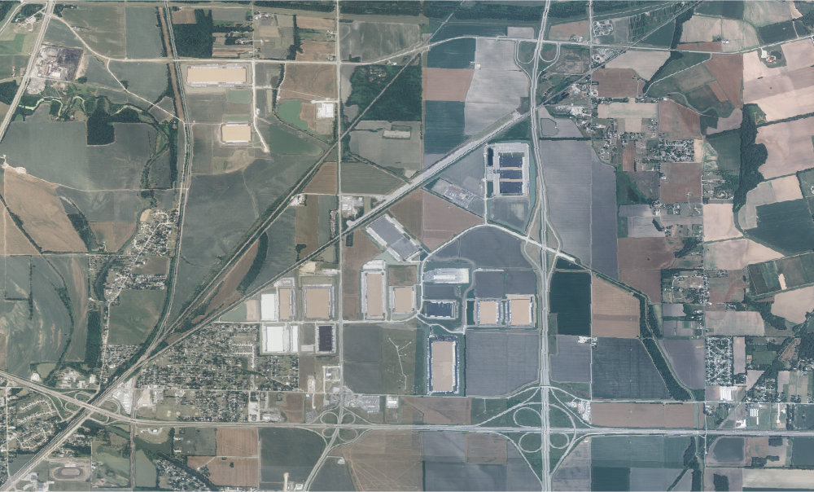
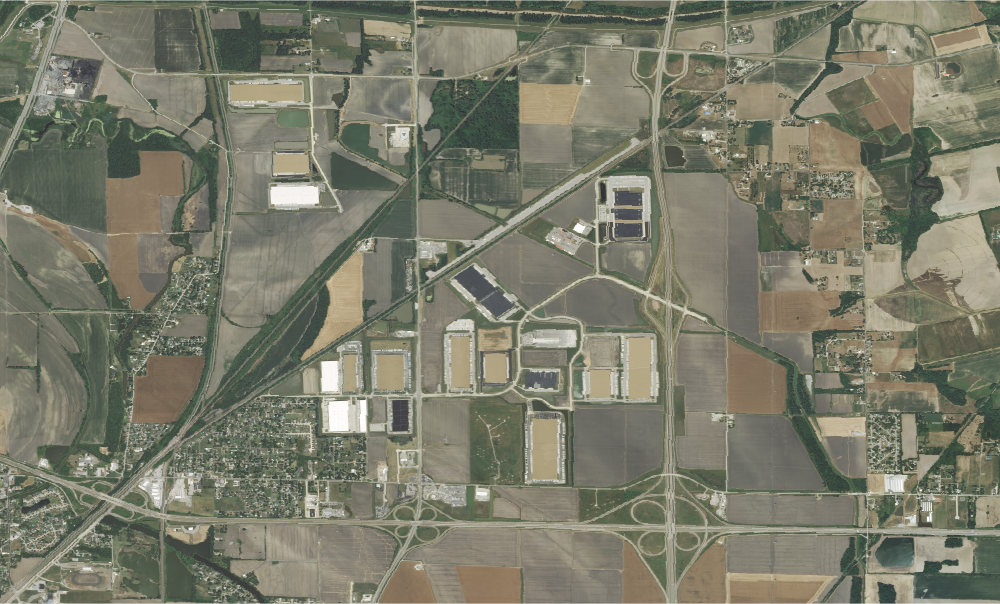

Create four HTML documents displaying the changes in the landscape using the exported PNG images from GEE using the NAIP dataset. One of the HTML documents should show all the images in the body without the need to use buttons or sliders (show at least 3 images from different dates).
A growing warehouse district near St. Louis, MO in 2007, 2012, and 2019.

